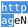

 URL Link
Brug
Vælg noget tekst, på en hjemmeside, tekst-indtastningsfelt (webformular) eller mail, og
højreklik.
-
Hvis teksten ligner en URL kan du åbne den direkte (eller i et
faneblad) via “Åbn det markerede”.
-
Hvis teksten ikke ligner et link, bliver du præsenteret for en undermenu
der lader dig behandle det som et link alligevel, eller udføre en frit definerbar
konvertering først (f.eks., tilføje “www.” og “.com”).
-
I Firefox, hold <Shift> nede ved valg af 'Åbn' for at åbne i et nyt
vindue i stedet for at bruge nuværende vindue.
Funktionalitet
-
URL Link er en lille Firefox- og Thunderbird-udvidelse der lader dig fremhæve
en ikke-URL i en mail/nyhedsmeddelelse eller hjemmeside, og åbne det i et
browservindue.
-
I mails genforbindes links som er ødelagte på grund af ombrydning over
flere linjer, og erstatter også mellemrum med URL-tegnkode %20
så du kan følge mailede netværkslinks af typen `file:' links (hvilket den
auto-detekterer fra Windows X: eller UNC netværksreferencer).
-
På hjemmesider lader den dig vælge tekstuelle links/URLs i hjemmesider
eller formularfelter, og følge dem som om de var rigtige links. Den vil
altid lade dig følge links og analyserer også mailto: links.
-
Den ombryder `mailto:' links (konverterer, f.eks.,
mailto:nogen@etsted.com til http://www.etsted.com), så du kan besøge det
relaterede websted.
-
Den kan `følge' javascript: links som ellers ville generere en pop-up
(f.eks., http://www.kelkoo.co.uk/ - omend de for nylig har ændret deres
links så URL Link fejler :-( Jeg håber at kunne arbejde på dette før
2.0).
Kommende ændringer
-
Brugerdefinerbar auto-erstatning af tekst med URLs.
Kontakt
Licence
This source code, like the Mozilla source, is licensed under a
disjunctive tri-licence giving you the choice of one of the three
following sets of free software/open source licensing terms: